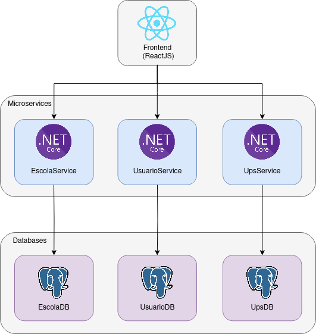
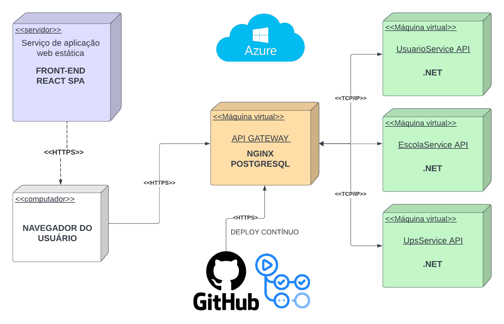
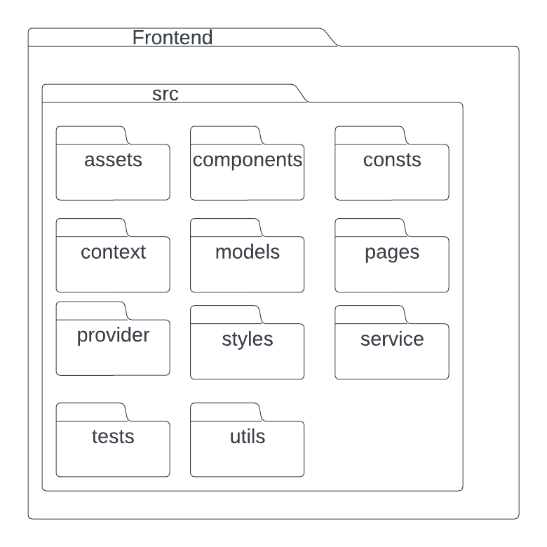
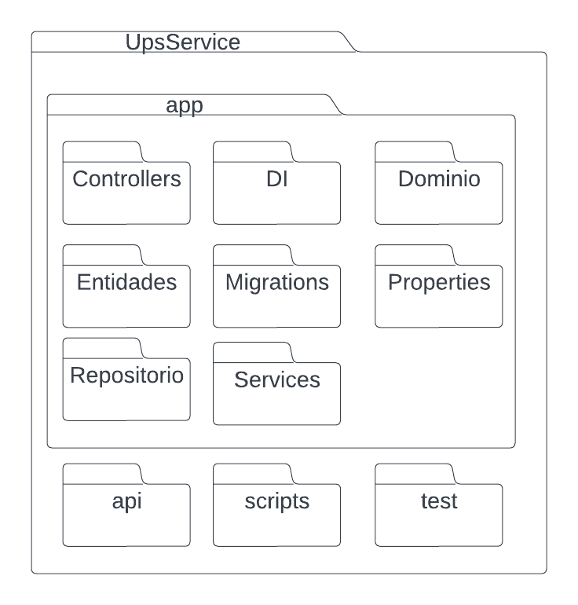
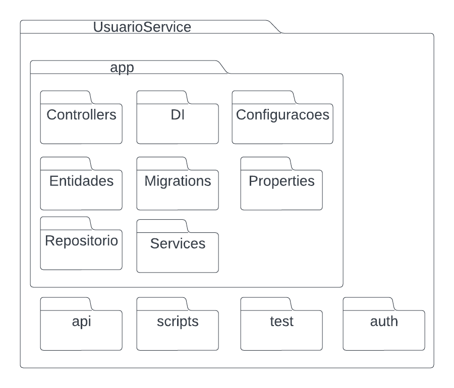
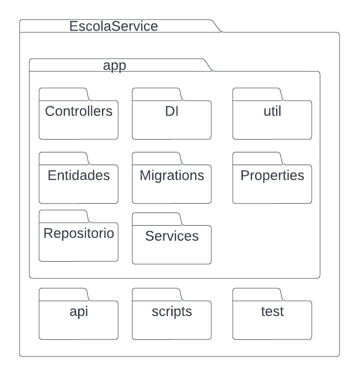
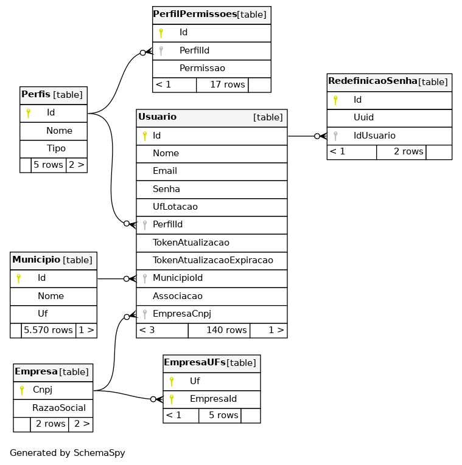
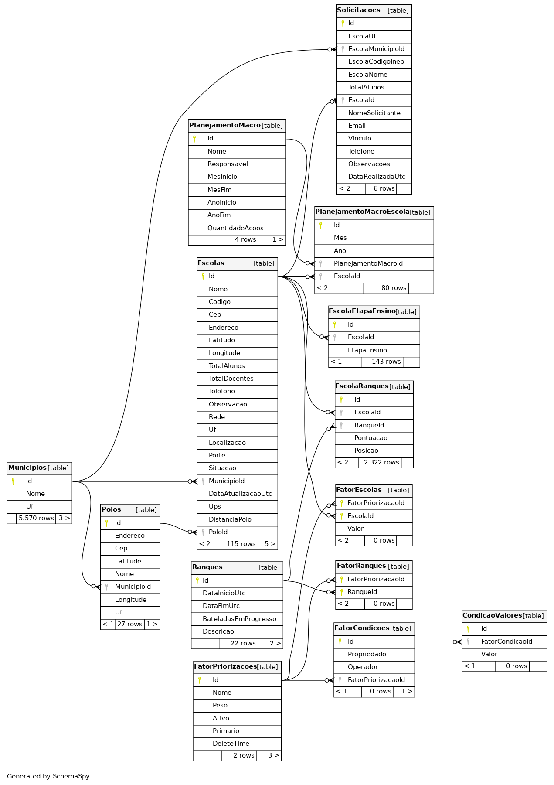

Documento de Arquitetura
Introdução
Este documento tem como objetivo detalhar a arquitetura do projeto e a visão de dados, apresentando uma visão geral do projeto, as tecnologias utilizadas e a visão de dados.
Através desse documento, é possível obter um melhor entendimento da arquitetura do projeto, permitindo ao leitor a compreensão do funcionamento do sistema e as abordagens utilizadas para o seu desenvolvimento.
Visão Geral
Este documento está estruturado da seguinte forma: - Introdução - Tecnologias - Representação Arquitetural - Visões do Sistema - Referências - Versionamento
Tecnologias
PostgreSQL
O PostgreSQL é um SGBD objeto-relacional que suporta grande parte do padrão SQL e disponibiliza recursos modernos, como chaves estrangeiras, triggers e consultas complexas. Uma de suas principais vantagens é o fato de ser uma ferramenta de código aberto que pode ser usada para fins privados, comerciais e acadêmicos.
.NET
O ASP.NET, utilizado para o back-end da aplicação, é um framework de código aberto que permite a criação de serviços usando .NET e C#. É um framework rápido, escalonável e seguro, que possui recursos internos de proteção contra ameaças de segurança. Além disso, o fato da instituição cliente já estar familiarizada com .NET foi determinante para a escolha dessa tecnologia, a fim de facilitar a futura manutenção do software.
xUnit
Para os testes do back-end foi escolhido o xUnit, uma ferramenta gratuita de código aberto com foco em testes unitários para aplicações .NET. É muito utilizada por ser simples, extensível e compatível com ferramentas de execução de teste.
React
O React é uma biblioteca Javascript altamente flexível que permite a construção de interfaces de usuário interativas e responsivas. A construção das aplicações é feita por meio de componentes que possibilitam uma alta reutilização de código.
Jest
Para os testes do front-end será usado o Jest, um framework de testes em Javascript simples, rápido e seguro. Permite escrever testes com uma API acessível, bem documentada e forncece relatórios de cobertura de código.
Representação Arquitetural
A arquitetura do projeto consiste no front-end e 3 microsserviços no back-end, sendo o primeiro para a gestão dos usuários, o segundo para a gestão das escolas e o terceiro para lidar com os cálculos e cadastros necessários para o cálculo do UPS (Unidade Padrão de Severidade).

Frontend (React)
O Frontend é a aplicação que o usuário acessa diretamente. React é uma biblioteca Javascript que permite a criação de interfaces de usuário interativas e responsivas atráves de componentes que permitem o reuso de código.
Microsserviços
Microsserviços são um estilo de arquitetura em que um conjunto de serviços se comunicam por meio de APIs mais leves. Essa forma de construir aplicações permite a separação de responsabilidades entre os diferentes componentes de um sistema, tornando-os independentes e mais escaláveis, além de facilitar a manutenção e evolução do software.
UsuarioService
Microsserviço para autenticação e autorização dos usuários.
EscolaService
Microsserviço responsável pelas funcionalidades relacionadas ao cáculo de ranque de escolas, configuração de prioridades, gerência de escola, de polos e etc.
UpsService
Microsserviço responsável pelas funcionalidades relacionadas à gerência de sinistros, de rodovias e cálculo de UPS de escolas.
Banco de Dados (PostgreSQL)
O PostgreSQL é um SGBD (Sistema Gerenciador de Banco de Dados) de código aberto. Cada microsserviço se comunicará com um banco de dados respectivo - o UsuarioService se comunicará com o UsuarioDB, por exemplo. Os diferentes bancos de dados têm flexibilidade quanto a ficarem em uma instância ou múltiplas instâncias do SGBD.
Visões do Sistema
Modelagem de Dados
A modelagem de dados é um processo fundamental na área de gerenciamento de informações. Envolve a criação de representações estruturadas que descrevem entidades, relacionamentos e atributos dos dados, permitindo uma compreensão clara e organizada dos mesmos. Através da modelagem de dados, é possível criar diagramas que retratam de forma visual como os dados estão relacionados entre si, facilitando a análise, a tomada de decisões e o desenvolvimento de sistemas de informação eficientes. Os diagramas a seguir apresentam a organização dos dados em seus respectivos bancos de dados.
Visão de Implantação
A visão de implantação tem como objetivo descrever a implementação física de informações geradas pelo programa de software em componentes de hardware e é utilizada no fluxo de trabalho de Análise & Design. Essa visão ilustra a distribuição do processamento em um conjunto de nós do sistema, incluindo a distribuição física dos processos e threads. Durante cada iteração do processo de desenvolvimento, essa visão é refinada para mostrar de forma mais clara a distribuição física do processamento no sistema. As caixas tridimensionais conhecidas como nódulos (nós), representam os elementos básicos de software ou hardware, ou nódulos no sistema. As linhas de nódulo a nódulo indicam relacionamentos e as formas menores contidas dentro das caixas representam os artefatos de software empregados. O diagrama de implantação pode ser visto a seguir.

Visão Lógica
A visão lógica do sistema se concentra na estruturação do sistema em unidades de implementação, como pacotes, classes e interfaces. Nessa visão, é possível identificar as dependências entre esses elementos, bem como as realizações de interface e os relacionamentos parte-todo, entre outras relações relevantes para a estruturação lógica do sistema. O diagrama lógico de dados (DLD) apresentado ao final deste documento representa essa visão.
Diagrama de Pacotes
O Diagrama de Pacotes é um diagrama de estrutura UML que descreve a estrutura do sistema projetado no nível de pacotes. São comumente usados para simplificar os diagramas de classe complexos e organizar as classes em pacotes, oferecendo uma valiosa visibilidade de alto nível para grandes projetos e sistemas. Nesse projeto, a utilização desse diagrama visa apresentar de forma clara a aquitetura de pacotes que serão usadas no desenvolvimento, apresentando os componentes, interfaces e dependências do software. Os diagramas de pacotes do frontend e dos 3 microsserviços podem ser vistas abaixo.
   
ME-R (Modelo Entidade-Relacionamento)
O ME-R representa o banco de dados em um nível conceitual. Nele trazemos as representações de nossas entidades, os atributos de cada uma delas e, por fim, cada relacionamento existente entre as entidades. Isso permite visualizar como os dados estão organizados e como as entidades se relacionam no sistema de informações.
UsuarioService
Entidades
EMPRESA
EMPRESAUFS
MUNICIPIO
PERFILPERMISSOES
PERFIS
REDEFINICAOSENHA
USUARIO
Atributos
- EMPRESA (cnpj, razaoSocial)
- EMPRESAUFS(uf, empresaId)
- MUNICIPIO(id, nome, uf)
- PERFILPERMISSOES(id, perfilId, permissao)
- PERFIS(id, nome, tipo)
- REDEFINICAOSENHA(id, uuid, idUsuario)
- USUARIO(id, nome, email, senha, ufLotacao, perfilId, tokenAtualizacao, tokenAtualizacaoExpiracao, municipioId, associacao, empresaCnpj)
Relacionamentos
USUARIO - realiza - REDEFINICAOSENHA (n:m)
Um USUARIO realiza uma ou mais REDEFINICAOSENHA, uma REDEFINICAOSENHA pode ser realizada por um ou mais USUARIO.
PERFIS - possui - USUARIO (1:n)
Um PERFIS possui um ou mais USUARIO, um USUARIO possui só e somente um único PERFIS.
PERFIS - possui - PERFILPERMISSOES (n:m)
Um PERFIS possui um ou mais PERFILPERMISSOES, um PERFILPERMISSOES é de um ou mais PERFIS.
MUNICIPIO - possui - USUARIO (1:n)
Um MUNICIPIO possui um ou mais USUARIO, um USUARIO possui só e somente um único MUNICIPIO.
EMPRESA - possui - USUARIO (1:n)
Um EMPRESA possui um ou mais USUARIO, um USUARIO possui só e somente um único EMPRESA.
EMPRESA - possui - EMPRESAUFS (1:n)
Um EMPRESA possui um ou mais EMPRESAUFS, um EMPRESAUFS possui só e somente um único EMPRESA.
EscolaService
Entidades
CONDICAOVALORES
CUSTOSLOGISTICOS
ESCOLAETAPAENSINO
ESCOLASRANQUES
ESCOLAS
FATORCONDICOES
FATORESCOLAS
FATORPRIORIZACOES
FATORRANQUES
MUNICIPIOS
PLANEJAMENTOMACRO
PLANEJAMENTOMACROESCOLA
POLOS
RANQUES
SOLICITACOES
Atributos
- CONDICAOVALORES(id, fatorCondicaoId, valor)
- CUSTOSLOGISTICOS(custo, valor, raioMin, raioMax)
- ESCOLAETAPAENSINO(id, escolaId, etapaEnsino)
- ESCOLASRANQUES(id, escolaId, ranqueId, pontuacao, posicao)
- ESCOLA (id, nome, codigo, cep, endereco, latitude, longitude, totalAlunos, totalDocentes, telefone, rede, uf, localizacao, porte, situacao, municipioId, dataAtualizacaoUtc, ups, distanciaPolo, poloId)
- FATORCONDICOES(id, propriedade, operador, fatorPriorizacaoId)
- FATORESCOLAS(fatorPriorizacaoId, escolaId, valor)
- FATORPRIORIZACOES(id, nome, peso, ativo, primario, deleteTime)
- FATORRANQUES(fatorPriorizacaoId, ranqueId)
- MUNICIPIOS(id, nome, uf)
- PLANEJAMENTOMACRO(id, nome, responsavel, mesInicio, mesFim, anoInicio, anoFim, quantidadeAcoes)
- PLANEJAMENTOMACROESCOLA(id, mes, ano, planejamentoMacroId, escolaId)
- POLOS(id, endereco, cep, latitude, longitude, nome, municipioId, uf)
- RANQUES(id, dataInicioUtc, dataFimUtc, bateladasEmProgresso, descricao)
- SOLICITACOES(id, escolaUf, escolaMunicipioId, escolaCodigoInep, escolaNome, totalAlunos, escolaId, nomeSolicitante, email, vinculo, telefone, observacoes, dataRealizadaUtc)
Relacionamentos
FATORCONDICOES - possui - CONDICAOVALORES (1:n)
Um FATORCONDICOES possui um ou mais CONDICAOVALORES, um CONDICAOVALORES possui só e somente um único FATORCONDICOES.
ESCOLAS - possui - ESCOLAETAPAENSINO (n:m)
Uma ESCOLAS possui uma ou mais ESCOLAETAPAENSINO, uma ESCOLAETAPAENSINO é de uma ou mais ESCOLAS.
ESCOLAS - possui - ESCOLASRANQUES (1:n)
Uma ESCOLAS possui uma ou mais ESCOLASRANQUES, uma ESCOLASRANQUES possui só e somente uma única ESCOLAS.
RANQUES - possui - ESCOLASRANQUES (1:n)
Um RANQUES possui uma ou mais ESCOLASRANQUES, uma ESCOLASRANQUES possui só e somente um único RANQUES.
ESCOLAS - possui - SOLICITACOES (1:n)
Uma ESCOLAS possui uma ou mais SOLICITACOES, uma SOLICITACOES possui só e somente uma única ESCOLAS.
ESCOLAS - possui - PLANEJAMENTOMACROESCOLA (1:n)
Uma ESCOLAS possui um ou mais PLANEJAMENTOMACROESCOLA, um PLANEJAMENTOMACROESCOLA possui só e somente uma única ESCOLAS.
ESCOLAS - possui - FATORESCOLAS (1:n)
Uma ESCOLAS possui um ou mais FATORESCOLAS, um FATORESCOLAS possui só e somente uma única ESCOLAS.
MUNICIPIOS - possui - ESCOLAS (0:n)
Um MUNICIPIOS possui zero ou mais ESCOLAS, uma ESCOLAS possui só e somente um único MUNICIPIOS.
POLOS - possui - ESCOLAS (0:n)
Um POLOS possui zero ou mais ESCOLAS, uma ESCOLAS possui só e somente um único POLOS.
FATORPRIORIZACOES - possui - FATORCONDICOES (1:n)
Um FATORPRIORIZACOES possui um ou mais FATORCONDICOES, um FATORCONDICOES possui só e somente um único FATORPRIORIZACOES.
FATORPRIORIZACOES - possui - FATORESCOLAS (1:n)
Um FATORPRIORIZACOES possui um ou mais FATORESCOLAS, um FATORESCOLAS possui só e somente um único FATORPRIORIZACOES.
FATORPRIORIZACOES - possui - FATORRANQUES (1:n)
Um FATORPRIORIZACOES possui um ou mais FATORRANQUES, um FATORRANQUES possui só e somente um único FATORPRIORIZACOES.
RANQUES - possui - FATORRANQUES (1:n)
Um RANQUES possui um ou mais FATORRANQUES, um FATORRANQUES possui só e somente um único RANQUES.
MUNICIPIOS - possui - SOLICITACOES (0:n)
Um MUNICIPIOS possui zero ou mais SOLICITACOES, uma SOLICITACOES possui só e somente um único MUNICIPIOS.
MUNICIPIOS - possui - POLOS (0:n)
Um MUNICIPIOS possui zero ou mais POLOS, um POLOS possui só e somente um único MUNICIPIOS.
PLANEJAMENTOMACRO - possui - PLANEJAMENTOMACROESCOLA (1:n)
Um PLANEJAMENTOMACRO possui um ou mais PLANEJAMENTOMACROESCOLA, um PLANEJAMENTOMACROESCOLA possui só e somente um único PLANEJAMENTOMACRO.
UpsService
Entidades
RODOVIAS
SINISTROS
Atributos
- RODOVIA (id, uf, anoApuracao, numeroRodovia, tipoTrecho, codigoSnv, localInicioFim, kmInicial, kmFinal, extensao, superficie, federalCoincidence, estadualCoincidence, superficieEstadual, mp082, concessaoConvenio)
- SINISTRO (id, uf, rodovia, km, snv, sentido, solo, tipo, causa, gravidade, feridos, mortos, ups, latitude, longitude, dataUtc)
DE-R (Diagrama Entidade-Relacionamento)
O DE-R baseia-se no ME-R e traz uma representação, no formato de diagrama, sobre as entidades, os atributos e os relacionamentos. Esse diagrama fornece uma visão um pouco mais próxima do nível lógico. Ele descreve as entidades (objetos do mundo real), seus atributos (características) e os relacionamentos entre as entidades. Os retângulos representam as entidades, as elipses indicam os atributos, losangos que indicam o relacionamento e as linhas conectam as entidades para mostrar como elas se relacionam. O DER é uma ferramenta fundamental para visualizar e planejar a estrutura de um banco de dados antes da implementação, ajudando a definir como os dados são armazenados e acessados.
DLD (Diagrama Lógico de Dados)
O DLD serve para especificar a um nível mais lógico as entidades, cada atributo com seus tipos (literal, inteiro, por exemplo), bem como os relacionamentos e as chaves de cada entidade - primárias ou estrangeiras. É uma representação gráfica que ilustra a estrutura lógica de um banco de dados, ele funciona como uma representação visual que orienta a implementação efetiva do banco de dados.
Usuários

Escolas

UPS (Rodovias e Sinistros)
Referências
EQUIPE DNIT 2023-1. Documento de arquitetura. Disponível em: https://fga-eps-mds.github.io/2023-1-Dnit-DOC/projeto/arquitetura/. Acesso em: 20/10/2023.
O que é arquitetura de microsserviços?. Disponível em: https://www.redhat.com/pt-br/topics/microservices/what-are-microservices. Acesso em: 20/10/2023.
ASP.NET. Disponível em: https://dotnet.microsoft.com/pt-br/apps/aspnet. Acesso em: 10/12/2023.
Jest. Disponível em: https://jestjs.io/pt-BR/. Acesso em: 10/12/2023.
PostgreSQL. Disponível em: https://www.postgresql.org/. Acesso em: 10/12/2023.
React. Disponível em: https://react.dev/. Acesso em: 10/12/2023.
xUnit. Disponível em: https://xunit.net/. Acesso em: 10/12/2023.
Visão de Implementação. Disponível em: https://www.cin.ufpe.br/~gta/rup-vc/core.base_rup/guidances/concepts/deployment_view_64CB74A6.html. Acesso em: 10/12/2023.
Diagrama de Implementação. Disponível em: https://www.lucidchart.com/pages/pt/o-que-e-diagrama-de-implementacao-uml. Acesso em: 10/12/2023.
Visão Arquitetural. Disponível em: https://www.trt9.jus.br/pds/pdstrt9/guidances/guidelines/architectural_view_FF6EDA37.html#:~:text=Vis%C3%A3o%20L%C3%B3gica%3A%20Descreve%20como%20o,todo%20e%20assim%20por%20diante.. Acesso em: 10/12/2023.
Diagrama Relacional. Disponível em: https://unbarqdsw2022-1.github.io/2022.1_G1_FGAvisos/#/Modelagem/2.1.2.6.DiagramaDeBancos. Acesso em: 10/12/2023.
Diagrama de Pacotes. Disponível em: https://unbarqdsw2022-1.github.io/2022.1_G1_FGAvisos/#/Modelagem/2.1.1.2.DiagramaDePacotes. Acesso em: 10/12/2023.
Versionamento
| Data | Descrição | Autor(es) |
|---|---|---|
| 20/10/2023 | Criação do documento | Wagner Martins |
| 22/10/2023 | Revisão | Thiago |
| 22/10/2023 | Adição da Visão de dados | Wagner Martins |
| 10/12/2023 | Adição das Tecnologias utilizadas | Victor Hugo |
| 10/12/2023 | Adição da Visão de Implementação | Victor Hugo |
| 10/12/2023 | Adição das Visões do Sistema | Victor Hugo |
| 10/12/2023 | Adição do Diagrama de Pacotes | Victor Hugo |
| 10/12/2023 | Adição do Diagrama Lógico de Dados | Thiago |
| 10/12/2023 | Atualização da visão de implantação | Thiago |